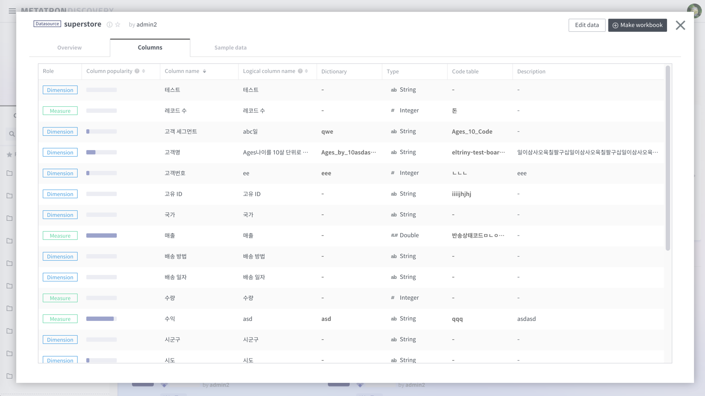
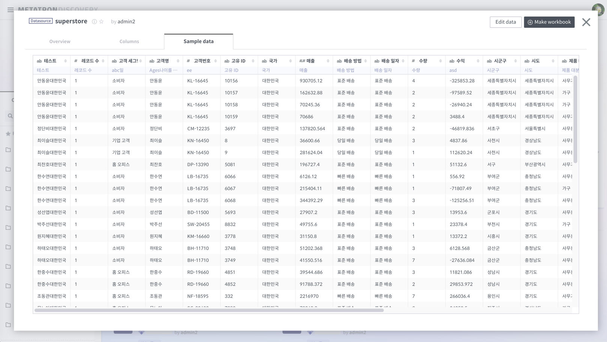
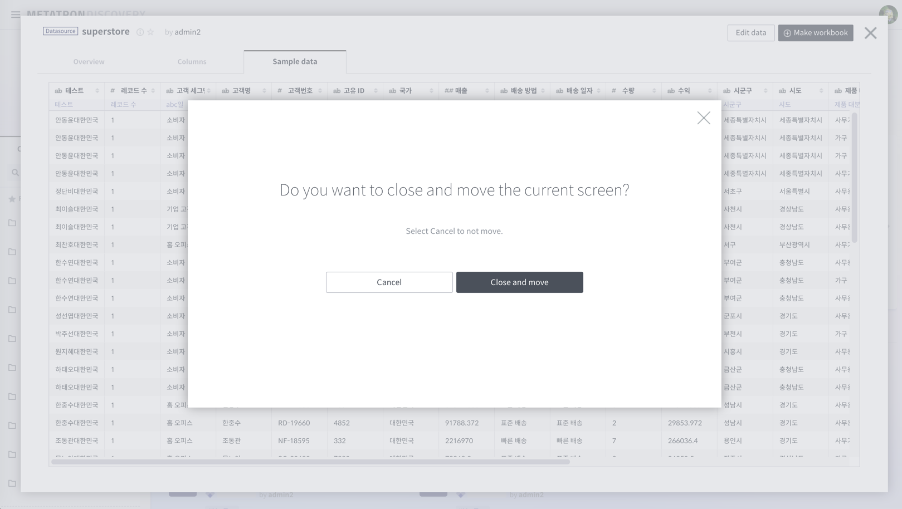
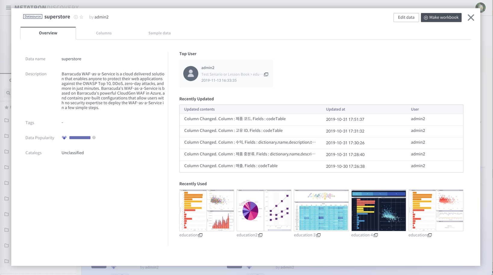

데이터 탐색하기¶
Metatron Discovery에서 제공하는 데이터 탐색의 목적은, 데이터가 어디 있던 쉽게 찾을 수 있고, 찾은 데이터로 시각화 할 수 있는 기능을 지원하고 있습니다.

데이터 탐색 오버뷰 화면¶
현재 사용하고 계신 원천 DB 내 데이터, 그리고 Metatron Discovery에서 제공하는 StagingDB(Slave DB) 및 Engine(Druid) 내 데이터를 관리할 수 있습니다.

데이터 탐색 상세 화면¶
데이터 탐색을 통해 원하는 데이터를 빠르게 찾을 수 있도록 기능을 제공하고 있습니다.

데이터는 크게 3부분으로 정보를 제공합니다. Overview, Column Scheme, Sample Data 입니다. 각 데이터 타입에 따라, 워크북(Datasource 타입인 경우), 워크벤치(DB 타입인 경우)를 만들 수 있는 액션버튼도 제공합니다.

샘플 데이터의 경우 현재 100건까지만 보여집니다. 권한이 있는 경우 ‘Management > Exploration’을 통해 더 많은 데이터를 확인하고 다운로드 할 수 있습니다. 권한의 여부는 해당 화면 상단에 ‘Edit data’라는 버튼의 유무로 확인할 수 있으며, 해당 버튼을 클릭하면 ‘Management > Exploration’로 이동이 가능합니다.

다른 메뉴로 점핑 시 다음과 같은 경고창이 보여집니다.

아래 화면은 ‘Management > Exploration’로 이동하였을때 화면입니다. 해당 공간에서, 관리자로서의 좀 더 많은 메타 정보를 상세히 볼 수 있고 관리할 수 있습니다.

카타로그, 태그 등의 검색과 필터 기능을 통하여 데이터를 빠르게 찾을 수 있습니다.

Metatron Discovery에서는 데이터를 카타로그로 관리할 수 있습니다. 카타로그을 그룹 등의 분류 군에 따라 구별해 두고 빠르게 데이터를 검색 하는 용도로 사용할 수 있습니다.

Favorite Data 화면¶
해당 기능은 준비 중입니다.
Data Creator 화면¶
해당 기능은 준비 중입니다.